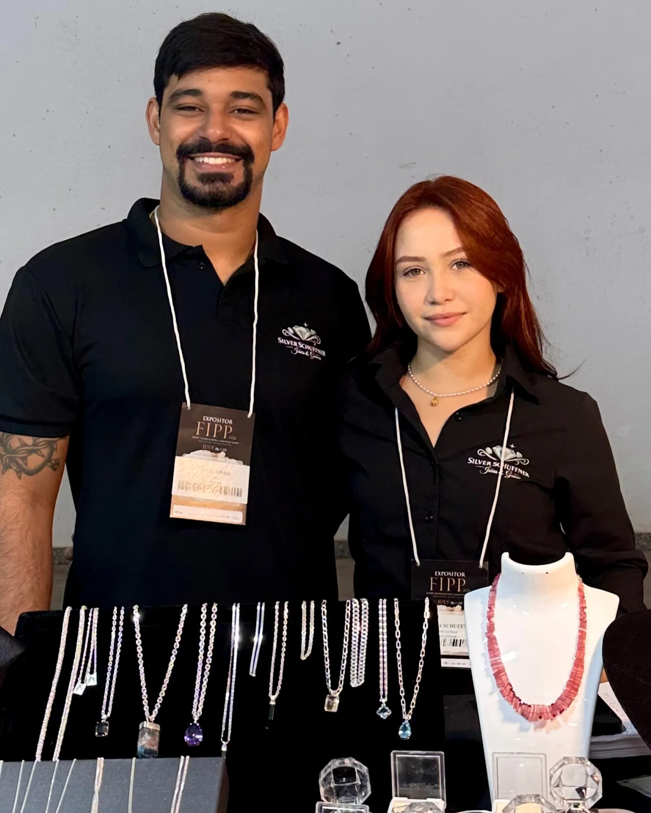

Joias com a sua pedra
Anéis, brincos e colares feitos no ateliê, com a pedra e o tamanho que você escolher.
Peças que saíram do ateliê
Toque numa peça para pedir a sua em prata ou ouro, com a pedra que você escolher.
O que o ateliê faz por você
O ateliê trabalha só com ouro e prata. Não fazemos banho.
-
Produção de joias
Peças novas a partir de um modelo da joalheria ou da sua ideia, em ouro ou prata, com a pedra que você escolher.
-
Reparo de joias
Solda, troca de pedra e recuperação de peças quebradas ou danificadas.
-
Ajuste de joias
Aumentar ou diminuir o aro de anéis e alianças e acertar o comprimento de correntes.
-
Limpeza de joias
Limpeza e polimento para a peça voltar a brilhar.
-
Lapidação
Lapidação de gemas para montar na sua joia.
Como funciona uma encomenda
ExemploEscolha
Você escolhe uma peça na joalheria, o metal e a pedra.
Conversa
No WhatsApp, vocês combinam os detalhes e o tamanho.
Produção
A peça é produzida no ateliê.
Entrega
Você recebe a joia pronta para usar.
O que dizem de nós
Os relatos e os prints de clientes entram aqui.
Espaço para o depoimento ou o print de um cliente.
Em breveEspaço para o depoimento ou o print de um cliente.
Em breveEspaço para o depoimento ou o print de um cliente.
Em breve

Nossa história
A Silver Schuffner é o ateliê de João Vitor Esteves e Thayna Schuffner, uma história que começou nas pedras e virou ourivesaria.
Começou nas pedras
O pai da Thayna é pedrista e trabalha com gemas há mais de 30 anos.
A ideia do sogro
Foi ele quem sugeriu ao João virar ourives: a cidade procurava o ofício e tinha pouca gente dedicada a ele. Com o apoio do sogro, João começou na bancada.
O ateliê hoje
A marca nasceu em fevereiro de 2026, e a primeira feira foi a FIPP. João faz as peças em prata e ouro, e Thayna cuida das gemas.
Gostou de alguma peça?
Chame o ateliê no WhatsApp e combine o modelo, o metal, a pedra e o tamanho.
- Número do ateliê em breve
- Perfil do ateliê em breve
- Feiras
- Feiras e horários em breve